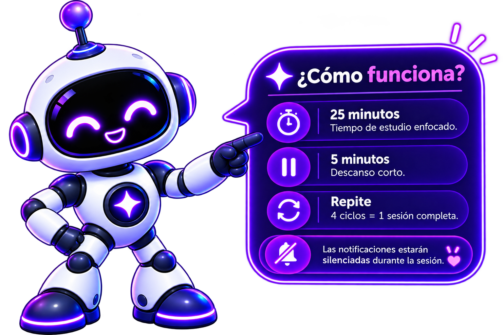
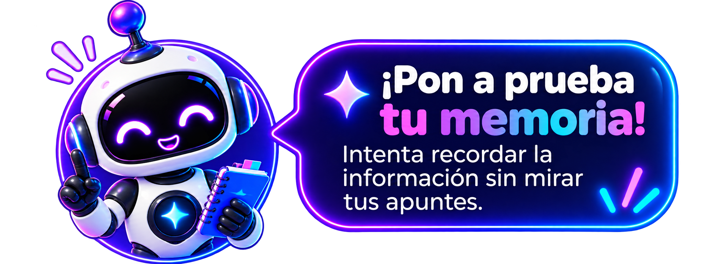

← Historial IA
PERSONALIZA TU SESIÓN
Elige tu método de estudio
Selecciona una técnica para continuar con tu plan.
Método Feynman
Explica para aprender

Técnica Pomodoro
Gestión del tiempo
+ Recomendado por Lumi

Active Recall
Recordatorio activo
Spaced Repetition
Repetición espaciada